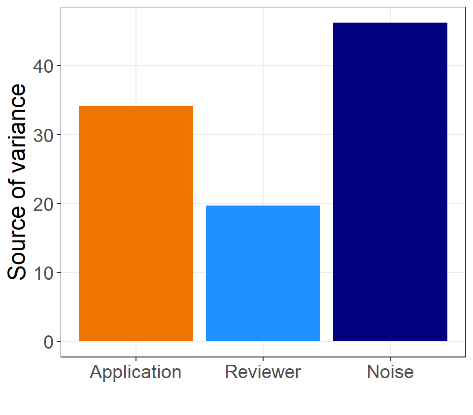

Building an evidence base to help improve the allocation of research funding: Where next?
2025-12-10
Decisions are noisy
Lottery first
- Gaming?

Change in diversity

Asian and Asian British applicants increased by 4.3% (2.0, 6.6%)
.

Uncertainty
Ask peer reviewers to give their uncertainty
Find which applications are hardest to review
Done with journals, DOI: 10.1098/rsos.240612

LLMs
Spikes in low-quality papers thanks to LLMs
World Conference on Research Integrity hit with AI generated abstracts
We should all be worried that LLMs will also increase funding applications

Career disruption
- Applicants can detail life events
- Level the playing field
- “Is it fair for grant reviewers — who are often our colleagues — to judge the legitimacy of career breaks due to personal circumstances?”

Questions
- Thanks to Rhys Thomas and Philip Clarke (Oxford)